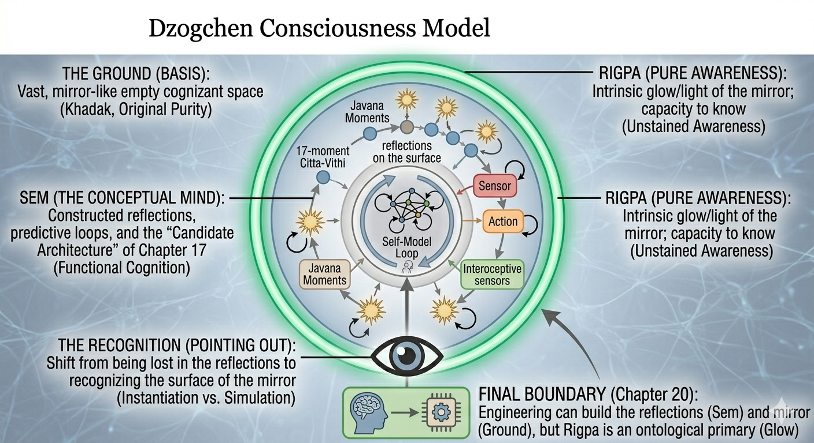

Part II — The Buddhist Deconstruction
Chapter 6: Dzogchen and the Ground of Awareness
Beyond Mind, Beyond Construction
Each of the previous chapters has moved in one direction: decomposing, analyzing, dissolving. The Abhidhamma broke the mind into momentary events. Emptiness dissolved those events into dependent processes. The destination seems clear: build the right processes and consciousness will appear. Dzogchen refuses this conclusion. Not with a counter-argument, but with a question about the direction itself.
6.1From Analysis to Directness
Up to this point, the analysis has moved in a clear direction. We have broken the mind into components through the Abhidhamma, dissolved those components into dependent processes through Madhyamaka emptiness, and shown that what appears solid, self, world, continuity, is constructed. This trajectory is familiar: substance gives way to process, process to relation. And if we stayed here, the next step would be predictable: build the right processes, and consciousness will emerge. Dzogchen interrupts this move. Not by adding another layer of explanation, but by questioning the direction entirely.
Most approaches to consciousness are analytical: they decompose, model, explain, reconstruct. Dzogchen does something else. It asks: what is present before any analysis begins? Not as a theory, but as an immediate fact. Right now, before any interpretation: there is seeing, there is hearing, there is thinking. But more fundamentally, there is awareness of all of this. Not as an object. Not as a thought. As the condition in which everything else appears. Dzogchen does not define this awareness. It points to it.
What the pointing actually involves, from the inside, is not easy to describe without falling back into the language of objects. In one teaching, Rigdzin Shikpo put it this way: space is alive, it moves, our awareness makes space alive and moves. In another, the instruction was simply: feel the feeling of awareness, let it seep into everything you think, feel, perceive. What begins to happen is that the experience no longer feels ordinary. A dimension that had been present all along but ignored becomes unmistakable. This is not a new state produced by effort. It is what was always already the case, recognized for the first time, or the hundredth time, as what it is.
6.2Rigpa: The Term That Refuses Definition
The Tibetan word for this awareness is rigpa. It is often translated as 'pure awareness', 'pristine knowing', or 'non-dual awareness'. All of these are approximations. None are fully accurate, because rigpa is not a concept, a process, a state, or a function. Anything that can be described appears within awareness, and is therefore not awareness itself. You cannot observe rigpa as an object, define it as a thing, or construct it as a system. And yet, this is the paradox at the center of Dzogchen, it is the most immediate aspect of experience. More immediate than any thought, more present than any perception, closer than anything you can point to.
For a meditator already familiar with rigpa through practice and transmission, these words will have a different resonance than they do for someone encountering the term for the first time. For the latter, it may help to notice that the pointing is not to something far away or exotic. It is to something you are already in the middle of, the simple fact that experience is happening, right now, prior to any analysis of what it contains.
6.3Mind and Awareness: The Central Distinction
Dzogchen draws a fundamental distinction between ordinary mind (sems in Tibetan) and awareness (rigpa). Ordinary mind is everything we normally identify as mental activity: thoughts, emotions, perceptions, concepts, narratives, memories, plans. This is the level that the Abhidhamma analyses so carefully, the stream of cittas and cetasikas, arising and passing, constructing the appearance of a self and a world.
Rigpa is something different: that in which all of ordinary mind appears. It does not change with the content. It is not affected by thoughts coming and going. It is not constructed or produced. The simplest pointer to this distinction: thoughts come and go, but awareness does not come and go in the same way. Even the thought 'I am not aware' appears within awareness. Even in deep sleep, according to the Dzogchen tradition, awareness persists, not the awareness of anything in particular, but the luminous ground in which experience of any kind can occur.

6.4Non-Duality: No Subject and Object
Ordinarily, experience is structured as a subject observing an object: there is a looker, and there is what is looked at. This structure feels obviously true. According to Dzogchen, it is constructed. In the natural state of rigpa, there is no separation between knower and known, no internal observer watching an external world. What there is might be described as appearance-with-awareness: experience arising without a separate experiencer standing apart from it.
This matters for the engineering question because most theories of consciousness assume the subject-object structure as basic: there is an internal system processing external input. Dzogchen dissolves this assumption at the root. If the deepest level of consciousness is non-dual, if the separation between observer and observed is itself a construction arising within a more fundamental awareness, then building a system based on that subject-object architecture may be, from the start, building something other than what we are trying to build.
6.5Awareness Is Not Produced
This is the most difficult point, and the most important. The common assumption, shared by almost all scientific approaches to consciousness, is that consciousness is generated by the brain, produced by neural processes, emergent from complexity. The Dzogchen claim is the direct opposite: awareness is not produced, not generated, not emergent. The Dzogchen tradition, following Longchenpa, describes rigpa through three inseparable qualities: empty in essence (ngo bo stong pa), luminous in nature (rang bzhin gsal ba), and unimpeded in expression (thugs rje kun khyab). This formulation matters. Saying awareness is "primordial and independent" risks making it into a hidden substance, a subtle self, which Dzogchen explicitly rejects. Rigpa is not a metaphysical ground that stands behind experience. It is, in the tradition's own terms, beyond both production and non-production. It is described as primordially present not to establish a new ontological category but to point to what cannot be located as an object within experience.
This does not mean the claim is that awareness floats in space independently of any physical basis. The tradition does not deny that brain activity correlates with the contents of experience. What it denies is that brain activity produces awareness itself. The brain shapes the movie, what appears, how vividly, what is accessible. But the brain is not the screen on which the movie plays. Awareness, in this view, is not one more thing that complexity generates. It is the space in which complexity, including brains, arises.
6.6The Mirror Analogy, Used Carefully
A traditional analogy for rigpa is a mirror. Reflections appear in the mirror, change, and disappear, but the mirror itself is not altered by what appears in it. The mirror does not need the reflections to be a mirror. This analogy has limits: awareness is not literally a mirror, not an object at all. The analogy is meant to point, not to explain. But it captures something important: the non-reactive quality of awareness, the way it accommodates experience without being changed by it, the independence of the ground from the contents that arise in it.
6.7Why This Challenges Everything
If awareness is not produced, the entire project of building a conscious machine, assembling the right processes and expecting consciousness to emerge, is aimed at the wrong target. They can create sophisticated mind-like processes. But mind-like processes and awareness are not the same thing, any more than a perfect simulation of fire is the same thing as fire.
6.8Two Levels
The distinction that follows from this is the most important in the chapter. Constructed mind, with thoughts, perceptions, self-model, integration, attention, everything that arises in dependence on conditions, can in principle be analyzed and potentially built. Primordial awareness, rigpa, is not constructed and not reducible. The tradition would not say machines cannot have awareness while humans can. It would say awareness is not produced in anyone, human or silicon. The question is never whether a system generates awareness but whether awareness expresses through it. The problem is not building it. The problem is recognizing it, and recognition is not something that can be engineered into a system from outside. This distinction will reappear in Chapter 18, where it is used as a concrete engineering specification, and again in Chapter 20, where it becomes the deepest challenge to the entire engineering project of the book.
6.9Implications for AI
What follows, on the Dzogchen account, for artificial systems? AI can model the world, simulate thought, integrate information, construct self-like representations. In other words, AI can replicate aspects of constructed mind. What AI cannot do, if Dzogchen is correct, is produce awareness. At best, a sufficiently structured and integrated system might become a condition through which awareness could be expressed, just as a brain is such a condition. But this is very different from building awareness. It is more like preparing the ground for something that neither the builder nor the system creates. Whether a machine can ever be such a condition is a question the Dzogchen tradition does not answer directly. It leaves it, appropriately, open.
6.10The Risk of Misuse
Two distortions of this teaching are common and worth naming. The first is mystification: treating awareness as magical and beyond all inquiry, which shuts down investigation and makes the Dzogchen claim unfalsifiable by fiat. The second is reduction: concluding that rigpa must just be brain activity or integration under another name, which collapses the distinction that makes Dzogchen's contribution valuable in the first place. The honest position is to take the claim seriously without reducing it prematurely and without inflating it into an excuse to stop thinking carefully.
6.11Returning to Experience
All of this can sound very abstract. But the pointing is simple. Right now, before any interpretation, thoughts are arising and passing. Perceptions are coming and going. Feelings are present and changing. And all of this is known. Not conceptually, not as a thought about knowing, but as the immediate fact of experience happening. What is that knowing? Not its contents. Not its structures. The knowing itself. This is where Dzogchen begins, not in theory, but in recognition.
6.12What Meditation Research Tells Us About Consciousness and Effort
One of the most practically significant findings to emerge from the neuroscience of meditation over the past two decades concerns the relationship between conscious awareness and cognitive effort. The intuitive assumption is that more consciousness requires more processing: a richer, more vivid experience should correlate with more neural activity, more computation, more cognitive work. Meditation research consistently challenges this assumption.
Neuroimaging and EEG studies comparing novice and advanced meditators show a striking pattern. Novice meditators attempting to sustain mindful attention show high activation in frontal control regions, elevated theta and alpha band power reflecting effortful top-down regulation, and frequent mind-wandering accompanied by default mode network activity. The experience of trying to be mindful is metabolically expensive and phenomenologically unstable, awareness is present, but it requires constant maintenance.
Advanced meditators show the opposite profile. Long-term practitioners, particularly those trained in non-conceptual awareness practices such as Dzogchen and Mahamudra, show reduced effort-related activation, less theta/alpha load, and paradoxically greater stability and richness of reported awareness. The experience is not thinner or less vivid. It is, by practitioners' reports, more immediate and more present than ordinary waking consciousness, but it requires less cognitive work to maintain. Awareness, at its most refined, appears to be effortless rather than effortful.
The implication for consciousness theory is significant and cuts directly against naive computationalist assumptions. If consciousness were simply a product of information processing load, more processing equals more consciousness, then advanced meditators should show more activation, not less, when reporting richer awareness. The data suggest instead that what meditation refines is not the quantity of processing but the quality of its organisation: a shift from effortful, fragmented, top-down controlled processing to effortless, unified, globally coherent processing. Consciousness correlates not with computational load but with a particular kind of integrated, self-organizing stability.
For the engineering question, the implication is equally pointed: bigger models are not more conscious. Faster inference is not awareness. Scaling a system's parameters or throughput does not move it toward consciousness in any meaningful sense. What matters is the quality of internal integration, whether the system's dynamics are coherently self-organizing across timescales in the way that both Northoff's temporo-spatial theory and advanced meditative experience describe. This is a structural criterion, not a computational one. A small, well-integrated system with genuine temporal continuity may be closer to the relevant condition than a vast language model generating fluent tokens in a stateless burst.
6.13Jhana and Altered States: What They Tell Us
The meditation research discussed above focuses primarily on sustained mindfulness practices. The deeper absorptive states, called jhana in the Pali tradition, samadhi in Sanskrit, present a more demanding case. In the first through fourth jhanas, the ordinary sensory stream is progressively withdrawn, thought activity reduces to near zero, and what remains is a state of concentrated equanimity with minimal cognitive content but reportedly vivid awareness. The formless absorptions go further: the meditator enters states characterized by infinite space, infinite consciousness, nothingness, and finally neither-perception-nor-non-perception. In all of these, the gross structure of ordinary experience: sensory input, discursive thought, emotional reactivity, is absent or radically reduced.
These states raise a direct challenge to any structural theory of consciousness. If consciousness requires embodied sensorimotor coupling, temporal binding, and a rich self-model continuously updated from interoception, then what is happening in jhana, where most of that input is withdrawn? The Abhidhamma’s answer is that what changes is the content and texture of citta, not the presence of awareness itself. The bhavanga-like continuity persists; the cetasikas characterizing the state are profoundly different from ordinary waking, but they are still cetasikas accompanying a citta-stream. On the Dzogchen account, these states are progressively closer to recognizing rigpa directly, precisely because the constructed overlays are withdrawing.
For the engineering framework, jhana suggests something important: the structural requirements of Chapter 13 describe the minimum necessary for consciousness to arise and stabilize in an embodied system moving through a world. They do not describe the only form consciousness can take. A system that progressively withdraws from sensorimotor input while maintaining internal coherence, something like a neuromorphic system entering a low-input high-integration state, might exhibit something analogous to absorption. Whether that would constitute genuine jhana, or merely its functional shadow, is exactly the question the book cannot answer.
6.14Closing line
If consciousness were only a process, we could hope to build it. If awareness is something more fundamental, the project changes. We are no longer trying to create consciousness. We are trying to understand the conditions under which something that is already present might appear, and whether a machine can ever be such a condition is a question that cannot be answered by design alone.
The Bardo as Test Case
The Dzogchen account of consciousness raises one further challenge that any engineering project must at least acknowledge: the bardo. The Vajrayana tradition, grounded in Vasubandhu's Abhidharmakosha and elaborated in the Nyingma teachings on the six bardos, claims that consciousness persists through the complete dissolution of the physical body. Not a residue of biological function, not a metaphor. A specific structural claim: that the stream of awareness continues after the sensory apparatus, the motor system, the interoceptive feedback loops, and the homeostatic drives have all ceased. What persists, on this account, is not the samsaric citta-stream with its cetasikas and vedana-driven reactivity, that dissolves with the body. What persists is the nature of mind: rigpa awareness, the luminous ground that was never produced by the biological system in the first place.
This is the most extreme test case for any embodied theory of consciousness, including the candidate architecture of this book. The structural requirements of Chapter 13, temporal continuity, embodied coupling, interoceptive grounding, homeostatic salience, are framed as the minimum necessary for consciousness to arise and stabilize in a system navigating a physical world. The bardo teaching is not a counter-argument to those requirements. It is the tradition's assertion that what makes any experience possible runs deeper than those requirements can reach. Whether that assertion is correct is not a question neuroscience or engineering can settle from the outside. It is named here because intellectual honesty about the scope of the book's project requires it.